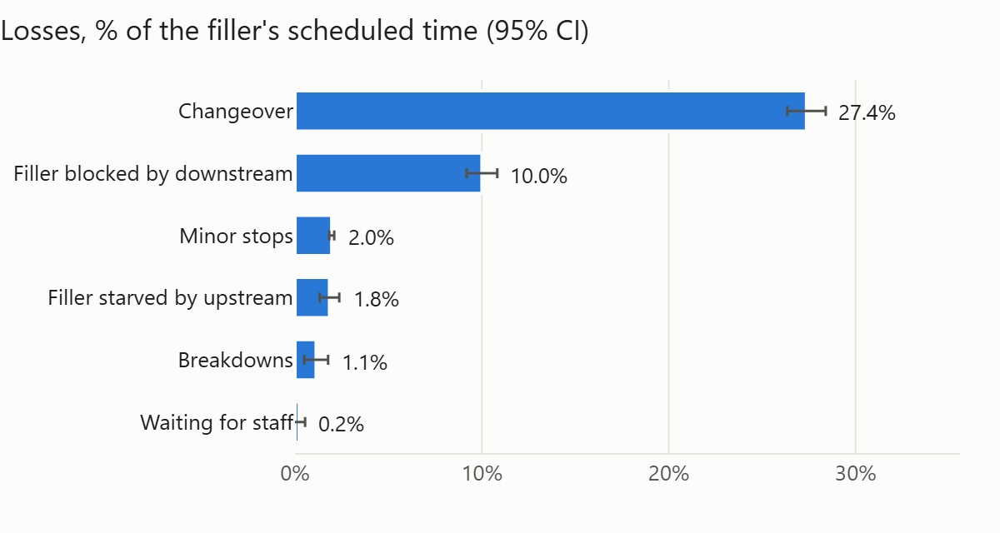
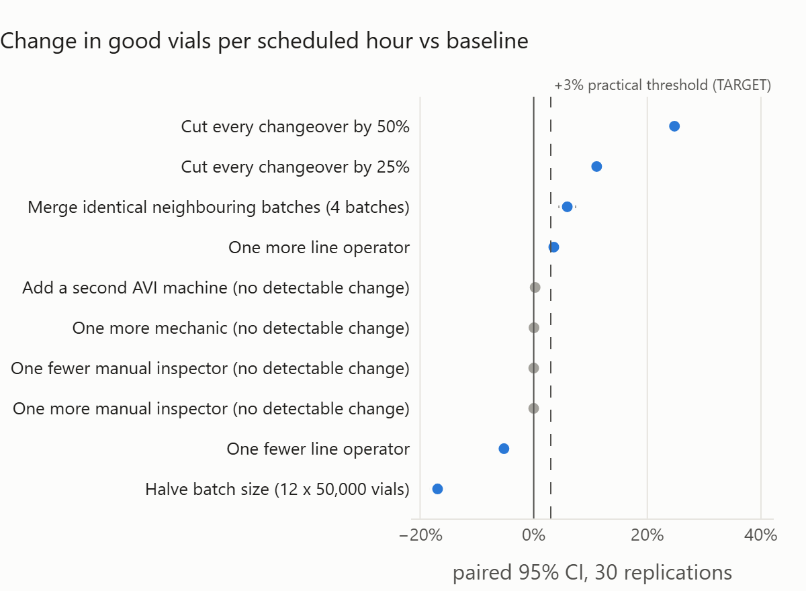

Aseptic fill-finish lines are capital-intensive and tightly scheduled, so plants look for more good vials from the same line. Typical proposals are judged with spreadsheet averages that ignore breakdowns, queues and blocking.
Decision: which lever adds the most good vials per scheduled hour, and which station limits the line?
Scenarios and decision rules were pre-registered before any run; a change counts as meaningful at +3% good vials per PPT hour or +2 OEE points.
Random: breakdowns (repair needs a mechanic), minor stops, defects and rejects, QA review time.
Planned: 6 batches, 2 products × 2 vial formats, 2 shifts × 5 days; three changeover types that need line operators.
GMP touchpoints modeled: line clearance inside every changeover, manual re-inspection of AVI rejects, QA batch release (adds lead time, not an equipment loss).
Out of scope: lyophilization, sterility-test holds, deviations, absenteeism. Parameters are public benchmarks or judgment, not plant data.
Two model errors were caught by these checks during the study, fixed, documented as dated errata, and every run repeated.
Honest limit: validation is face validity only. No plant data; a practitioner review is pending.
| Analytic check | Theory | Simulated | Error | In 95% CI |
|---|---|---|---|---|
| M/M/1 mean queue wait Wq (rho=0.5), min | 0.9995 | 0.9926 | -0.7% | yes |
| M/M/1/K blocking probability (rho=0.8, K=5) | 0.08882 | 0.08777 | -1.2% | yes |
| Availability MTBF/(MTBF+MTTR) (240/20) | 0.9231 | 0.9226 | 0.0% | yes |
Common random numbers made the scenario CIs 1.3–7.1× narrower than independent runs.

Baseline line OEE 57.3% (95% CI 56.4%–58.2%, 30 replications). Changeover is the largest loss at 27.4% of scheduled time. The filler was named the constraint by all 4 methods and was the sole bottleneck 61.9% of the time.

What would change the answer: a different product mix or schedule; filler speed outside the ±20% tested; SMED savings well below 25% (the reduction levels are assumptions, not measured). Merging identical batches also helps (+5.9%) where the schedule allows.
With real data: fit failure and repair times per station from the historian or MES, time a real changeover to size SMED, calibrate to measured OEE and check a holdout week. A what-if app lets a plant team try their own levers.